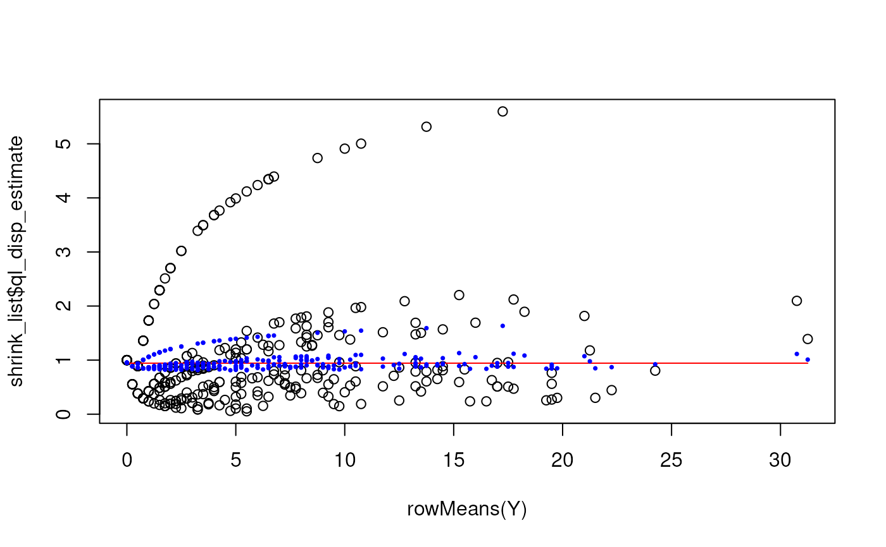

Shrink the overdispersion estimates
Source:R/quasi_gamma_poisson_shrinkage.R
overdispersion_shrinkage.RdLow-level function to shrink a set of overdispersion estimates following the quasi-likelihood and Empirical Bayesian framework.
Usage
overdispersion_shrinkage(
disp_est,
gene_means,
df,
disp_trend = TRUE,
ql_disp_trend = NULL,
...,
verbose = FALSE
)Arguments
- disp_est
vector of overdispersion estimates
- gene_means
vector of average gene expression values. Used to fit
disp_trendif that isNULL.- df
degrees of freedom for estimating the Empirical Bayesian variance prior. Can be length 1 or same length as
disp_estandgene_means.- disp_trend
vector with the dispersion trend. If
NULLorTRUEthe dispersion trend is fitted using a (weighted) local median fit. Default:TRUE.- ql_disp_trend
a logical to indicate if a second abundance trend using splines is fitted for the quasi-likelihood dispersions. Default:
NULLwhich means that the extra fit is only done if enough observations are present.- ...
additional parameters for the
loc_median_fit()function- verbose
a boolean that indicates if information about the individual steps are printed while fitting the GLM. Default:
FALSE.
Value
the function returns a list with the following elements
- dispersion_trend
the dispersion trend provided by
disp_trendor the local median fit.- ql_disp_estimate
the quasi-likelihood dispersion estimates based on the dispersion trend,
disp_est, andgene_means- ql_disp_trend
the
ql_disp_estimatestill might show a trend with respect togene_means. Ifql_disp_trend = TRUEa spline is used to remove this secondary trend. Ifql_disp_trend = FALSEit corresponds directly to the dispersion prior- ql_disp_shrunken
the shrunken quasi-likelihood dispersion estimates. They are shrunken towards
ql_disp_trend.- ql_df0
the degrees of freedom of the empirical Bayesian shrinkage. They correspond to spread of the
ql_disp_estimate's
Details
The function goes through the following steps
Fit trend between overdispersion MLE's and the average gene expression. Per default it uses the
loc_median_fit()function.Convert the overdispersion MLE's to quasi-likelihood dispersion estimates by fixing the trended dispersion as the "true" dispersion value: \(disp_{ql} = (1 + mu * disp_{mle}) / (1 + mu * disp_{trend})\)
Shrink the quasi-likelihood dispersion estimates using Empirical Bayesian variance shrinkage (see Smyth 2004).
References
Lund, S. P., Nettleton, D., McCarthy, D. J., & Smyth, G. K. (2012). Detecting differential expression in RNA-sequence data using quasi-likelihood with shrunken dispersion estimates. Statistical Applications in Genetics and Molecular Biology, 11(5). https://doi.org/10.1515/1544-6115.1826.
Smyth, G. K. (2004). Linear models and empirical bayes methods for assessing differential expression in microarray experiments. Statistical Applications in Genetics and Molecular Biology, 3(1). https://doi.org/10.2202/1544-6115.1027
Examples
Y <- matrix(rnbinom(n = 300 * 4, mu = 6, size = 1/4.2), nrow = 300, ncol = 4)
disps <- sapply(seq_len(nrow(Y)), function(idx){
overdispersion_mle(Y[idx, ])$estimate
})
shrink_list <- overdispersion_shrinkage(disps, rowMeans(Y), df = ncol(Y) - 1,
disp_trend = FALSE, ql_disp_trend = FALSE)
plot(rowMeans(Y), shrink_list$ql_disp_estimate)
lines(sort(rowMeans(Y)), shrink_list$ql_disp_trend[order(rowMeans(Y))], col = "red")
points(rowMeans(Y), shrink_list$ql_disp_shrunken, col = "blue", pch = 16, cex = 0.5)
